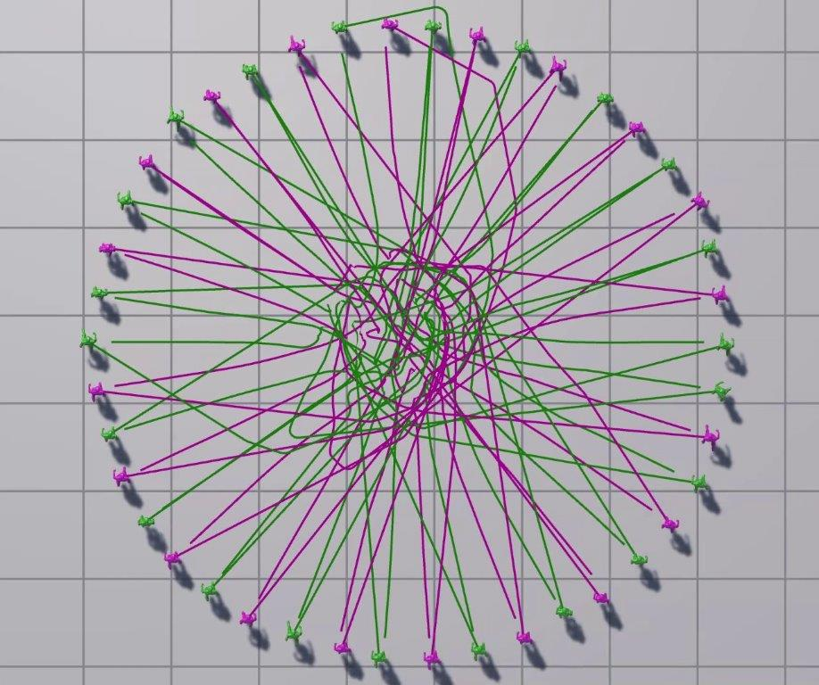

Reinforcement Learning (RL) has become a popular framework for learning desired behaviors for computational agents in graphics and games. In a multi-agent crowd, one major goal is for agents to avoid collisions while navigating in a dynamic environment. Another goal is to simulate natural-looking crowds, which is difficult to define due to the ambiguity as to what is a natural crowd motion. We introduce a novel methodology for simulating crowds, which learns most-preferred crowd simulation behaviors from crowd-sourced votes via Bayesian optimization. Our method uses deep reinforcement learning for simulating crowds, where crowd- sourcing is used to select policy hyper-parameters. Training agents with such parameters results in a crowd simulation that is preferred to users. We demonstrate our method’s robustness in multiple scenarios and metrics, where we show it is superior compared to alternate policies and prior work.
@article{talukdar:crowds:2024,
title = {Learning Crowd Motion Dynamics with Crowds},
author = {Talukdar, Bilas and Zhang, Yunhao and Weiss, Tomer},
year = {2024},
journal = {Proc. ACM Comput. Graph. Interact. Tech.},
volume = {7},
number = {1},
}
This project was funded in part by NJIT-BGU research seed grant.